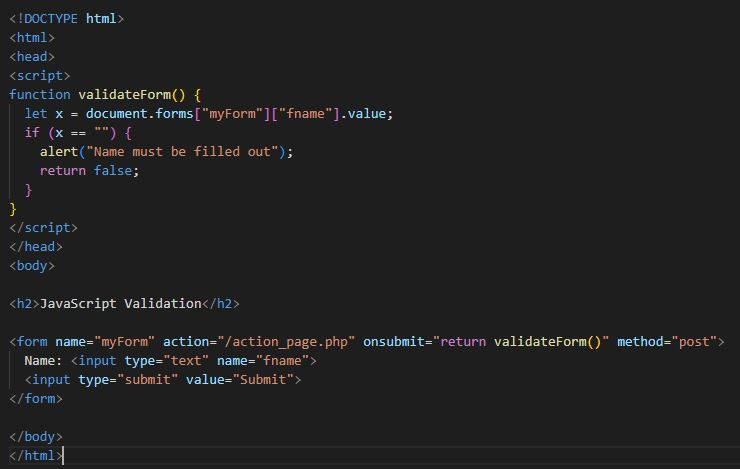

One thing I learned from searching and digging a little bit more about forms is that one of the reasons the Javascript programming language was created is for forms, as it was necessary to validate form data without having to refresh the page. Almost every web page we see and use today contains forms. In this week's reading I was able to learn some very useful properties and methods when using forms. It was very helpful to practice using not only text inputs but also passwords, checkboxes, radio buttons, and drop-down lists; all of this makes it possible for the form, and the page in general, to have a better appearance and be more dynamic. Something I was able to learn is about form validation, I still need to practice more on this topic, specifically the validation of special characters and dates. Most of them will be using using PHP which I understand that it is not part of the front-end programming.
This is a pretty simple but very easy to follow example of a form using JS:
